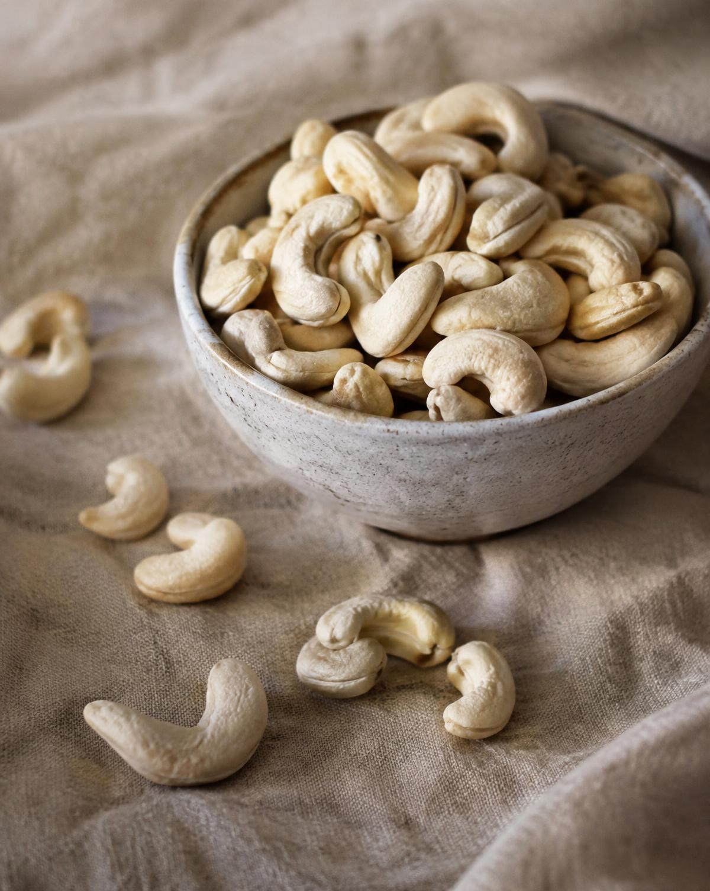

Nuts & Applications
Cashew Kernels: Grades, Formats and Buyer Needs
How to frame a requirement for whole kernels, splits or pieces.

At a glance
- Choose whole kernels, splits or pieces for the application.
- Agree quality limits alongside the grade.
- Include allergen information and packing requirements.
Choose a format for the application
Whole kernels, splits and pieces serve different purchasing needs. Presentation may be important for a retail or snack product, while pieces may suit an ingredient application. Describe how the cashews will be used before selecting the format.
Make the grade part of the agreement
Tropic Treasure’s portfolio includes W320 cashew kernels. Ask for the complete specification for the grade offered, including appearance and the applicable quality limits. A product name alone does not capture every acceptance requirement.
Include allergen and packing information
Cashews require clear allergen information. Discuss allergen controls, packaging integrity, storage and shelf life with the supplier, and confirm the documentation required by your business. Record these requirements with the order specification.
Put the knowledge to work
Let’s shape your
next product enquiry.
Share your product, specification, quantity and destination. We’ll review the available options with you.
Discuss your requirements